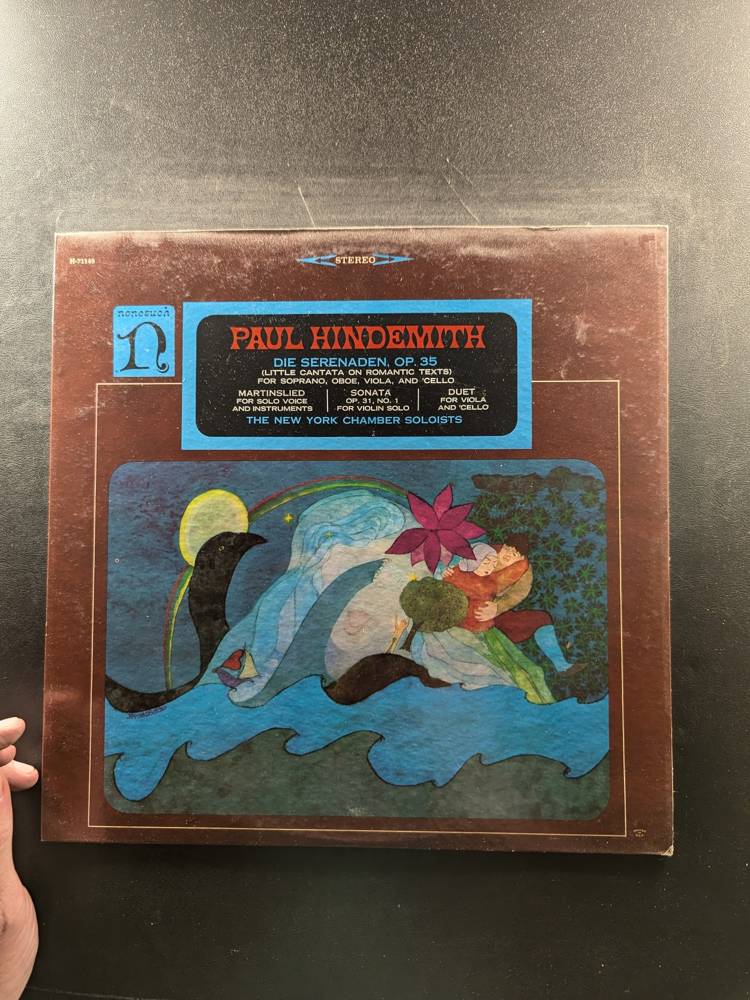

Ibert / Glazounov / Villa-Lobos
Vincent Abato, Norman Fickett, John Barrows
Nonesuch H-71030
Concerto in G Major, Op. 73 / Introduction & Variations, Op. 102 / Society Rondo, Op. 117
Johann Nepomuk Hummel
Musical Heritage Society MHS 1701
Ancient Voices of Children
George Crumb
Nonesuch H-71255

Le Boeuf sur le Toit / La Création du Monde
Darius Milhaud
Nonesuch H-71132
Symphonies Nos. 1, 3, 5, 6
Luigi Boccherini
Musical Heritage Society MHS 651
Also Sprach Zarathustra
Fritz Reiner / Chicago Symphony
RCA Victor VICS-2659
Symphony No. 4
Mahler
Nonesuch H-71293
Symphony No. 5
Prokofiev, Ormandy, Philadelphia Orchestra
Odyssey Y 30034
Finlandia
The Philadelphia Orchestra, Eugene Ormandy, Conductor
Columbia Masterworks MS 6196
Symphony No. 3 & Symphony No. 4
Georg Solti, Vienna Philharmonic
London ffrr CS 6582
The Exotic Rimsky-Korsakov
Camarata Conducting Kingsway Symphony Orchestra & Chorus
London SPC 21033
Mendelssohn Violin Concerto / Tchaikovsky Violin Concerto
Pinchas Zukerman
Columbia Masterworks MS 7294
Piano Concerti No. 17 in G Major, K. 453 & No. 27 in B-flat Major, K. 595
Mozart
Candide CE 31119
Caprices for Solo Violin, Op. 1
Niccolo Paganini
Musical Heritage Society MHS 1122
Mozart Piano Concertos No. 12 in A, K. 414; No. 21 in C, K. 467 'Elvira Madigan'
Radu Lupu
London Jubilee 411 853-1
A Ceremony of Carols
Benjamin Britten
MHS 4807A
Alexander Nevsky
André Previn
Angel S-36863
Stravinsky: The Firebird - Suite (1919) / Bizet: Children's Games / Ravel: Mother Goose - Suite
Carlo Maria Giulini
Seraphim 60022
Five Pieces for Orchestra, Op. 16 / Chamber Symphony, Op. 9
Schoenberg
Nonesuch D-2001
Prokofiev Classical Symphony / Bizet Symphony in C
Leonard Bernstein, New York Philharmonic
Columbia MS 7113
English Music for Strings
Neville Marriner conducting The Academy of St. Martin-in-the-Fields
Angel S-36868
The Two Violin Concertos
Serge Prokofiev
Musical Heritage Society MHS 3421
Die Serenaden, Op. 35
Paul Hindemith
Nonesuch H-71189
Concerto in E Flat
Wolfgang Amadeus Mozart
The Bach Guild HM 30 SD
Scheherazade
Rimsky-Korsakov
Yorkshire Records SPR 510 220
{kind=link}
{kind=link}
{kind=link}
{kind=link}
{kind=link}
{kind=link}
{kind=link}
{kind=link}
{kind=link}
{kind=link}
{kind=link}
{kind=link}
{kind=link}
{kind=link}
{kind=link}
{kind=link}
{kind=link}
{kind=link}
{kind=link}
{kind=link}
{kind=link}
{kind=link}
{kind=link}
{kind=link}